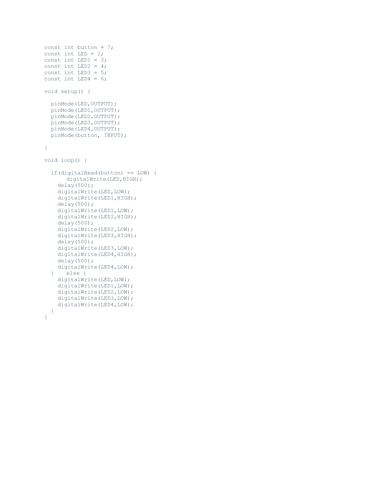

10.4 Assignment #1
In this assignment, I have created a circuit using arduino that when clicked at the button it lights up the LEDs one by one for 0.5 seconds. However, because my computer lags while doing this it looks like it takes more than 0.5 seconds. For creating this I used the pins from 2 to 7. the pins 2 to 6 are used as OUTPUT pins for turning on the LEDs and the pin 7 is used as a switch mechanism by using a pull up resistor and a pushButton.

For making this I wrote a code in arduino. Initially I started by defining each pin and gave them specific names I did this out of any function because I wanted to be able to make those variables universal meaning I can use in any function. Then I defined what each pin is used for (should it be a INPUT pin or OUTPUT pin). I did this in the void setup() function because I want the Arduino to setup every pin before initating the rest of the code. Then in the void loop() function I coded so that when pin 7 reads LOW (which means no current passes through) turn on the LEDs one by one and keep them up for 500 miliseconds and then turn them off one by one. I put my code down below:
As you can see above my delays are 500 miliseconds or 0.5 seconds. I also moved on and did Kevin's second Final assignment which is a counter that says your name on every number where number modulus 5 is equals to 0.